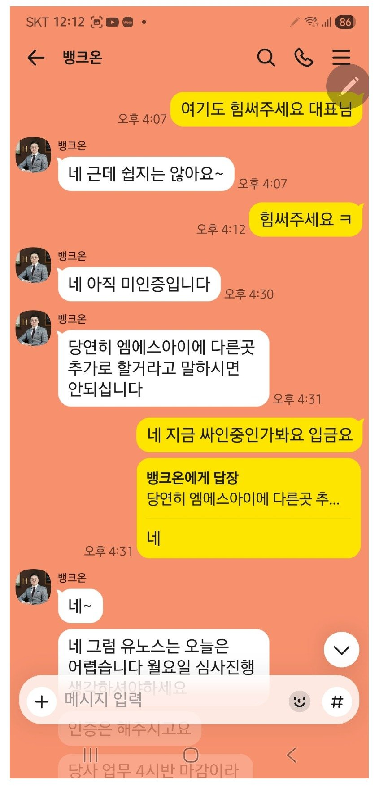

[개인회생자대출] 김용혁이사님 이현섭과장님 진심 깔끔하신 일처리로 회생대출 700완료했어요
금욜아침시작해서 남편앞으로 대출받았어요
개인회생 월급 3번찍혀서 긴가민가 이사님믿고 신청했어요
남편이 근무중이라 바빠서 제가 이사님과 소통하면서 남편은 과장님과 소통하면서 너무깔끔하고
정확하고 빠른일처리에 박수를 보내드리고 싶어요
다른중개업체에서 잘못된정보로 헷갈리게 하기도
했지만
이사님믿고 뱅크앤론에 신청했어요
아직추가 300더 부탁드렸는데 힘들다고는 하셨는데
또 되면 후기남겨드릴께요
대출 알아보시는분들 한번 뱅크앤론 믿고 신청해보세요
김용혁이사님 이현섭과장님 더운날 진짜로 고생하셨습니다
자금 잘쓰고 잘갚아가겠습니다

https://cafe.naver.com/cityman88/311661